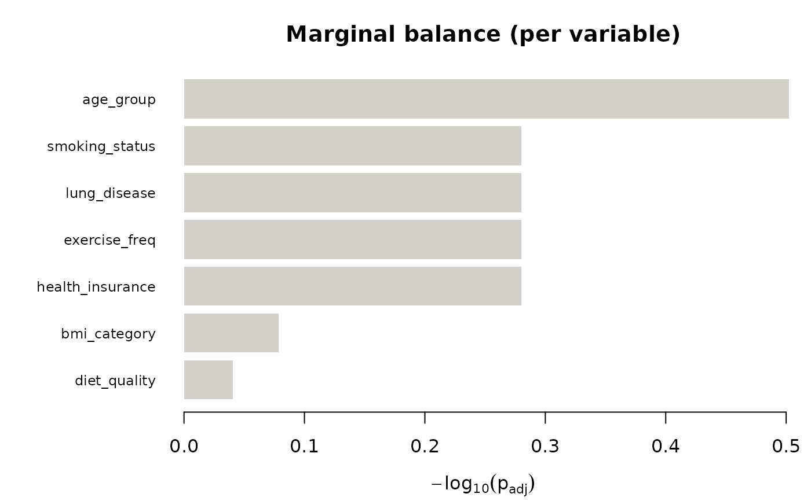

Joint categorical distribution diagnostic across groups
Source:R/joint_balance.R, R/jointbalance-methods.R
joint_balance.RdRuns a descriptive cross-group diagnostic for categorical data: marginal comparisons per variable, plus modality-level omnibus and edge-wise association-structure comparisons. Intended as the user-facing entry point for cross-group diagnostics in meta-analysis, multi-site studies, and repeated cross-sectional surveys.
Arguments
- data
A data frame of categorical variables plus a grouping column.
- group
Character. Name of the grouping column in
data. Must be categorical with at least 2 levels.- variables
Optional character vector. Names of columns to include in the joint analysis. Default
NULLuses all columns indataother thangroup.- n_perm
Integer. Permutations for the omnibus test, passed to
test_modality_graph_equality. Default500L.- n_perm_edge
Integer. Permutations for the edge-wise post-hoc test. Default equal to
n_perm.- alpha
Numeric. Significance level reported for all three testing families. Default
0.05.- strata
Optional stratification vector passed through to the omnibus and edge-wise tests. Length must equal
nrow(data).- run_edgewise
Logical. If
TRUE(default), runstest_modality_edge_differencesfor each pair whose omnibus test rejects atalpha. Set toFALSEto skip the post-hoc step (faster, useful when you only want the balance summary).- seed
Optional integer seed.
- verbose
Logical. If
TRUE(default), prints progress.- x
A
jointbalanceobject.- ...
Ignored.
- object
A
jointbalanceobject.
Value
An object of class jointbalance with components:
groupName of the grouping variable.
group_levelsCharacter vector of group levels.
variablesCharacter vector of analysed variables.
marginalData frame, one row per variable:
variable,chisq,df,p_value,p_adjusted,cramers_v. Adjustment is BH across variables.pairwise_omnibusData frame, one row per group pair:
group_x,group_y,n_x,n_y,statistic,observed,p_value,p_bonferroni. Adjustment is Bonferroni across pairs.pairwise_edgewiseNamed list of
catmodedgetestobjects, one per pair that rejected the omnibus (empty if none did orrun_edgewise = FALSE). Names are"\{group_x\}_vs_\{group_y\}".modality_graphsNamed list of
catmodgraphobjects, one per group level.alphaThe alpha used.
callThe matched call.
Details
What this function reports, in plain terms.
Marginal balance (the classical "Table 1" check): is each variable distributed the same across groups, one variable at a time?
Joint balance (the modality network test): is the full joint categorical structure the same across groups?
Where the joint structure differs (the edge-wise post-hoc): which modality-pair associations account for any joint disagreement?
Marginal similarity is not sufficient to establish similarity of joint categorical association structure. Two groups with identical marginals can still differ in joint structure — for example, if variable A and variable B are positively associated in group 1 and negatively associated in group 2, both groups will show the same one-way marginals for A and for B, but the joint distribution will differ. This is exactly the scenario the modality-layer test is designed to catch, and it is the reason a joint-structure diagnostic can reveal discrepancies that marginal-only Table 1 summaries may miss.
Interpretation. The diagnostic compares observed categorical distributions and modality-level association patterns across groups. It does not establish exchangeability, causal comparability, or absence of residual confounding. Results should be interpreted as evidence of distributional and associational discrepancies, not as proof that groups are or are not analytically interchangeable.
Testing families and multiplicity. Three separate multiple-testing corrections are applied:
Marginal tests: Benjamini-Hochberg FDR across the \(p\) variables. Exploratory; the marginal panel of the plot is meant to triage, not to make definitive claims.
Omnibus tests across group pairs: Bonferroni across the \(\binom{k}{2}\) pairs. Conservative by design, because these pairwise tests are logically nested (rejecting "wave 1 vs wave 2" and "wave 1 vs wave 3" both implicate wave 1).
Edge-wise post-hoc within each pair: Benjamini-Hochberg across edges, as done by
test_modality_edge_differences. This is a conditional family, valid under the closed-testing principle only if the omnibus rejected.
These are three separate testing families, not one big correction. The print method makes this distinction explicit.
When not to use this. joint_balance() is a
descriptive diagnostic for fully categorical data. It is not a
causal adjustment tool and does not replace propensity-score or
entropy-balancing workflows. For continuous covariates use the
cobalt or tableone packages; this function silently
coerces numeric columns to factors if they appear in
variables, which is almost never what you want.
Functions
print(jointbalance): Print a concise diagnostic summary.summary(jointbalance): Return the key diagnostic tables.
References
The marginal/joint distinction is a long-standing one in log-linear modelling; see Agresti (2013), Categorical Data Analysis (3rd ed.), Wiley, chapter 9, for homogeneity-of- association tests built from three-way log-linear models. The permutation approach used here is an alternative that avoids the large-sample assumptions of the likelihood-ratio test.
Examples
# \donttest{
data(survey_health)
jb <- joint_balance(
survey_health, group = "sex",
n_perm = 200, n_perm_edge = 200, seed = 1, verbose = FALSE
)
jb
#> jointbalance diagnostic
#> Group variable : sex
#> Levels : female, male
#> Variables : 7 ( age_group, smoking_status, lung_disease, exercise_freq, bmi_category , ... )
#> Alpha : 0.05
#>
#> Marginal tests (BH-adjusted across variables):
#> Variables rejecting at alpha : 0 / 7
#>
#> Pairwise omnibus tests (Bonferroni across group pairs):
#> Pairs rejecting at alpha : 0 / 1
#>
#> Three separate testing families; see ?joint_balance for details.
summary(jb)
#> $marginal_table
#> variable chisq df p_value cramers_v p_adjusted
#> 1 age_group 6.2042760 2 0.04495299 0.10718862 0.3146709
#> 2 smoking_status 2.6730409 2 0.26275837 0.07022684 0.5246600
#> 3 lung_disease 0.7878298 1 0.37475715 0.03812559 0.5246600
#> 4 exercise_freq 2.7482263 2 0.25306393 0.07120764 0.5246600
#> 5 bmi_category 1.3596640 3 0.71501635 0.04994794 0.8341857
#> 6 diet_quality 0.1868313 2 0.91081486 0.01860064 0.9108149
#> 7 health_insurance 0.9263115 1 0.33582322 0.04137899 0.5246600
#>
#> $pairwise_omnibus_table
#> group_x group_y n_x n_y statistic observed p_value p_bonferroni
#> 1 female male 206 195 frobenius 1.911981 0.1492537 0.1492537
#>
#> $n_edgewise_pairs
#> [1] 0
#>
#> $group
#> [1] "sex"
#>
#> $group_levels
#> [1] "female" "male"
#>
#> $alpha
#> [1] 0.05
#>
plot(jb)
#> No pair rejected the omnibus at alpha = 0.05; falling back to layout = 'marginal_only'.

# }